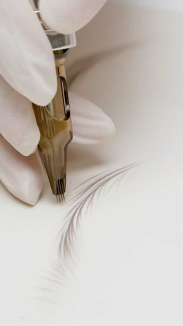

Maquillage semi-permanent · Saint-Jean-le-Blanc
Sublimer vos traits, le naturel avant tout
Sourcils, ras de cils, lèvres, taches de rousseur : Indie réalise un maquillage semi-permanent sur mesure, pour intensifier et structurer avec précision, sans transformer.
- Premier diagnostic offert au studio
- Certifié Hygiène et Salubrité
- 15 rue du Général de Gaulle, 45650 Saint-Jean-le-Blanc
- Du mardi au samedi, de 10h à 19h, sur rendez-vous uniquement

Qui suis-je ?
Moi, c'est Indie
Pendant 17 ans, j’ai eu le privilège d’évoluer dans le milieu de la coiffure mixte haut de gamme et du luxe, où j'ai aiguisé mon sens de l'excellence et du sur-mesure. Aujourd’hui, c’est avec cette même exigence que je poursuis mon chemin en me consacrant à la beauté du regard et à l'expression de votre visage à travers le maquillage semi-permanent.
Pourquoi ce virage ? Parce que j’aime le détail absolu qui fait toute la différence et que ma plus grande satisfaction est de vous rendre beaux à vos yeux avant tout et de vous apporter confiance en vous-même. Mon univers reste celui de la haute précision : redonner de la force à votre identité visuelle et révéler votre confiance intérieure. Hâte de sublimer vos traits avec toute la bienveillance et le savoir-faire d'exception que j'ai acquis.
Indie
Nos soins
Un maquillage pensé pour votre visage
Chaque projet est conçu sur mesure, adapté à votre morphologie.
Avant / Après
Voir la différence
Faites glisser le curseur pour comparer l'avant et l'après.
Pour tous
Le soin de soi n'a pas de genre
Le maquillage semi-permanent n'est pas réservé aux femmes. L'objectif n'est pas de transformer, mais d'intensifier et de structurer avec précision, pour un effet « trompe-l'œil » qui harmonise les traits du visage. Indie vous accueille au cabinet pour concevoir avec vous un projet sur mesure.
Votre sécurité
Une hygiène irréprochable
Le maquillage semi-permanent est un art, mais votre sécurité reste la priorité absolue d'Indie, certifié « Hygiène et Salubrité ».
- Matériel stérile
Matériel stérile et à usage unique : les aiguilles sont déballées devant vous.
- Désinfection
Désinfection rigoureuse du plan de travail et des outils entre chaque client.
- Protections
Port des protections réglementaires : gants et masque.
- Précision
Indie travaille avec un dermographe Amiea Pulse, choisi pour sa stabilité : un tracé fin et un geste plus doux pour la peau.
Déroulement
Comment se passe votre projet ?
01Le premier diagnostic, offert
Indie échange avec vous au studio sur votre envie, votre visage et le rendu souhaité. Un maquillage semi-permanent reste 1 à 3 ans : il mérite un temps de réflexion.
02Questionnaire et consentement
Le questionnaire de santé vérifie l'absence de contre-indications. Le consentement éclairé vous explique la séance, la cicatrisation et la tenue.
03La séance
Le tracé et le pigment sont choisis ensemble. Comptez de 45 min à 2h45 selon le soin.
04Cicatrisation et retouche
La couleur s'adoucit d'environ 30 à 40 % en un mois. La retouche du mois suivant fixe le tout et perfectionne les détails.
Avis Google
Les avis de ses clients
Rendez-vous
Envie de sauter le pas ?
Choisissez votre soin et un horaire libre : Indie vous confirme ensuite votre rendez-vous. Une question ? Le premier diagnostic est offert au studio.